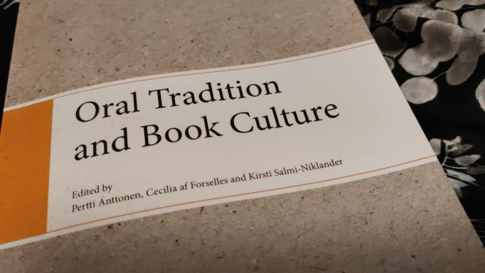
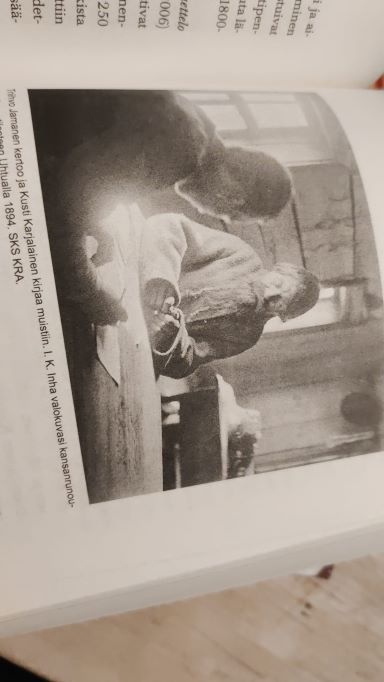

Lukemista ja lukemisen retoriikkaa tai diskurssia tutkittaessa eräs hyvin keskeinen käsite on lukuhalu.
Suomen kielen sanaa lukuhalu on käytetty tässä merkityksessä jo 1840-luvulta lähtien, mutta myös lukuintoa ja lukuinnostusta
käytetään sen kanssa rinnakkain. Lukuhalulla viitataan ihmisten sisäiseen motivaatioon lukea. Vastaavia käsitteitä ovat ranskan
kielessä goûtde la lecture, englannissa love of/for reading tai reading for pleasure, saksassa Leselust ja ruotsissa läs(e)lust.
Lukuhalu säätelee lukumotivaatiota tehden lukemisesta innostuneen ja mielihyvää tuottavan positiivisen kokemuksen.
Lukuhalun olemassaolo tarkoittaa, että lukija todella haluaa hakeutua kirjallisuuden ääreen. Lukuhalun merkitys on suuri,
sillä se toimii pohjana kaikelle omaehtoiselle lukuharrastukselle. Siihen perustuvaa lukemista on pidetty olennaisena,
koska se liittyy myös tekstien ymmärtämis- ja tuottamiskykyyn. Lukuhaluun liitetään paitsi taito tarkastella asioita
myötätuntoisesti eri perspektiiveistä, myös kyky ymmärtää oma arvonsa ja rakentaa omaa identiteettiään ja maailmankuvaansa.
Lukuhaludiskurssi liittyy erityisesti 1500- ja 1600-luvuilla katolisen kirkon vastareformiin. Siinä
kannustettiin kirkon jäseniä lukemaan. Kirkon puolelta yritettiin vahvistaa ihmisten sisäistä uskonnollista elämää ja
henkilökohtaista sitoutumista kirkon oppeihin. 1700-luvulle tultaessa keskustelu lukuhalusta kiihtyi ja koski nimenomaan
huolta maallisesta lukemisesta, joka saatettiin nähdä jopa vahingollisena aktiviteettina. Uusien ryhmien, kuten naisten,
nuorison ja alempien yhteiskuntaluokkien, innostuminen lukemisesta Saksassa 1700—1800-lukujen vaihteessa herätti jopa
kiivaan debatin lehdissä ja kirjallisuudessa. Suhtautuminen lukemiseen on ollut arvottavaa ja ohjailevaa. Lukemisdiskurssin
ytimessä on myös valistusfilosofien mielestä ajatus siitä, että lukeminen on lähtökohtaisesti hyvää, kunhan se tapahtuu
hallitussa ympäristössä järkiperäisesti ja jos lukija on tietoinen lukemisen ”salaperäisestä vetovoimasta”. Näyttäänkin siltä,
että maallista lukemista ei saa tässä ajatuksessa määrittää emootio, joka taas oli keskiajalla nähty tärkeänä osana monastista
lukemista.

Parin vuosisadan aikana lukuhalu läpäisi koko yhteiskunnan ja maltillista lukuhalua alettiinkin pitää eräänä modernin persoonallisuuden
peruspiirteistä. Se nähdään nykyään välttämättömänä ominaisuutena, jota sivistynyt henkilö kykenee hallitsemaan. Lukuhalun huippukohtana
Suomessa voidaan nähdä ajanjaksoa 1990-luvun alusta 2000-kuvun alkuun. 1900-luvun lopulla lukuhaludiskurssissa kuului vielä huoli lukemisen
vaarallisuudesta ja siitä, että lukeminen voi viedä mennessään tai vaikkapa heikentää lukijan moraalia. Lukuhalun kontrollointina voidaan nähdä
esimerkiksi vaikkapa se, kuinka kirjastoihin valittiin kirjallisuutta. 1900-luvun viime vuosikymmeninä tapahtui kuitenkin selkeä käänne:
haitallisina ja vaarallisina alettiin pitää muita, uudempia mediatuotteita. Puhe lukemisen vaaroista muuttuikin huoleksi lukemisen puutteesta.
Lukemisen väheneminen, ja etenkin nuorten kohdalla, on herättänyt huolta jo pitkään. Säännöllisin väliajoin ilmestyy uutisia, jossa nuorten
lukemisen tilaa pohditaan. Mutta on muistettava, että lukemiskulttuuri on aina ollut luonteeltaan muuttuvaa ja nuorten lukeminen on aina
herättänyt keskustelua, vaikka keskustelun painotukset ovat eri aikoina vaihdelleet. Lukuhalun historiallisen olemuksen ymmärtämisellä
nykyhetken huolia voi tarkastella rauhallisemmin mielin. Mäkisen sanoin: ”Ennen nykyajan massalukemiskulttuuria oli jotakin ja jotakin
tulee olemaan sen jälkeenkin. Monet pelkäävät keskinkertaistumista, banalisoitumista ja puhdasta konsumerismia, jos perinteinen kirjanlukeminen
heikkenee. Tämä on toistuva teema lukemisen historiassa ja huoli on varmasti aitoa. Kuitenkin, jos historia jotain opettaa, se opettaa, että
täydellistä dekadenssia ei ole odotettavissa.”